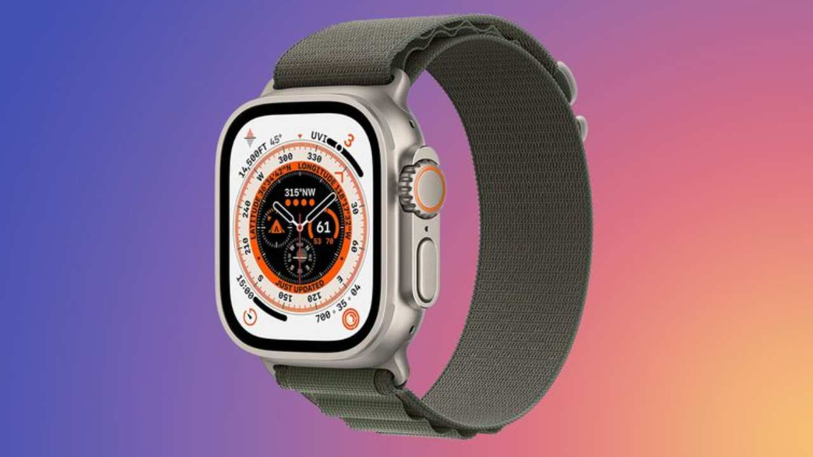

Apple’dan Watch Ultra’nın pil süresini katlayacak hamle!
Ünlü analist Ross Young, microLED ekranlı yeni Apple Watch Ultra modelinin tanıtım tarihini sızdırdı. İşte detaylar...

Geçtiğimiz aylarda sızdırılan bilgilere göre Apple, yeni Watch Ultra modelinde microLED ekran paneline yer verecek. Ünlü analist Ross Young, yeni Apple Watch Ultra modelinin tanıtım tarihini sızdırdı.
MicroLED ekranlı Apple Watch Ultra, pil süresi konusunda iddialı olacak
Sızdırılan bilgilere göre şirket, yeni Apple Watch Ultra modelinde 2.1 inç diyagonal ekrana yer verecek. MicroLED panel ile donatılacak ürün, OLED teknolojisine kıyasla enerji verimliliği avantajına sahip. MicroLED teknolojisinin bir diğer avantajı ise ekran yanma riskinin OLED ve AMOLED panellere göre daha düşük olması. Analistler, microLED panellerin kullanım ömrünün daha uzun olduğunu belirtiyor.h4>
Adından da anlaşılacağı gibi microLED, tek tek pikseller için mikroskobik LED’lerden oluşuyor. Üretim süreci, bir plaka üzerinde küçük LED’ler oluşturmayı ve bunları bir arka panele aktarmayı içeriyor.
Enerji verimliliği avantajı nedeniyle yeni nesil Apple Watch Ultra modelinin pil ömrünü önemli ölçüde artacağı belirtiliyor. MicroLED ekranlar ayrıca, piksel düzeyinde ayrı ayrı LED’ler sayesinde kontrast iyileştirmeleri ve daha hızlı yanıt süreleri sağlar, ayrıca renk daha iyi ve daha parlaktır.
MicroLED teknolojisi, OLED panellerde olduğu gibi esnek ekranlarda kullanılabiliyor. Apple’ın katlanabilir cihazlarında microLED teknolojisine yer vereceği tahmin ediliyor..